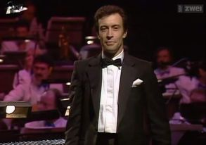

José Calvário
The MAESTRO

Born in 1951 in the beautiful city of Porto, José Calvário was a
brilliant portuguese composer, arranger, conductor, and record producer.
He was a man way ahead of his time, started practicing the piano at a
very early age and quite successfully so, judging by the fact that, aged
six, he gave his first recital. By the age of 10, he performed as a
piano soloist with the Philharmonic Orchestra of Porto.
The 1974 melodious love ballad by the title of "E Depois do Adeus", is a remarkable song in more than one way. It won a ticket to the Eurovision Song Contest in Brighton, where José Calvário made his first of four appearances as a conductor in the contest, aged 23 and thereby one of the youngest ever to conduct in this competition. A couple of weeks after the contest, in Portugal, the Carnation Revolution broke out, a coup by lower military with left-wing sympathies which ousted the dictatorial regime from power. The airing of "E Depois do Adeus" on the Emissores Associados de Lisboa radio station on April 24th, was the preconcerted signal for the revolutionaries to start their planned action. Needless to say, "E Depois do Adeus" has gone on to become one of the most well-known songs in Portuguese popular music of all times.
Listen to this beat! ♫
"Mapas", composed and arranged by José Calvário, was
recorded in 1996 in the Abbey Road Studios, with the
Hungarian State Symphony Orchestra conducted by the maestro.
This limited edition album was created in three
movements:
"Discovering Africa", "Far East" and
"Log-book".

This page was built by Maria Calvário 👩💻